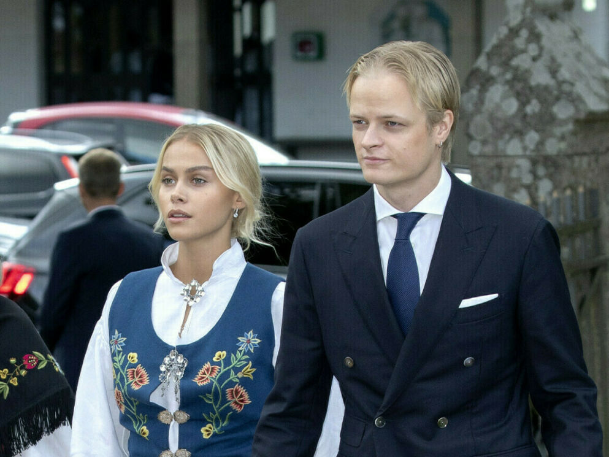

Over tre uker etter at han ble pågrepet, har fremdeles ikke Marius Borg Høiby forklart seg. - Belastende for henne
å vente, sier ekskjærestens bistandsadvokat.

ANKLAGER: Juliane Snekkestad har anklaget ekskjæresten Marius Borg Høiby for vold. Hun har siden vært i flere politiavhør om saken. Foto: